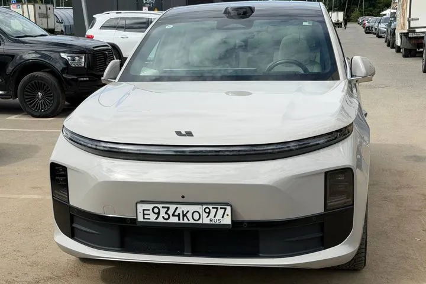

ОБЪЯВЛЕНИЕ АГЕНТСТВА
Li Auto Lixiang L6 MAX
Li Auto Lixiang L6 MAX — 2024 год, 32 500 км. Цена и наличие требуют подтверждения.



5 990 000 ₽
Цена из объявления на 23.08.2026. Цена и состав расходов указаны в публикации продавца. Актуальность и наличие требуют подтверждения.
- Кузов
- Кроссовер
- Год
- 2024 год
- Пробег
- 32 500 км
- Двигатель
- Уточняйте по объявлению
- Статус
- Продан по каналу · 29.09.2026
Данные перенесены из публикации агентства. Характеристики, состояние и историю необходимо проверить перед покупкой.
Данные и фотографии из публикаций агентства. Дата публикации: 23.08.2026. Старые объявления не подтверждают наличие сегодня.
Позвонить Дмитрию ↗Канал агентства ↗Открыть интерактивную карточку ↗